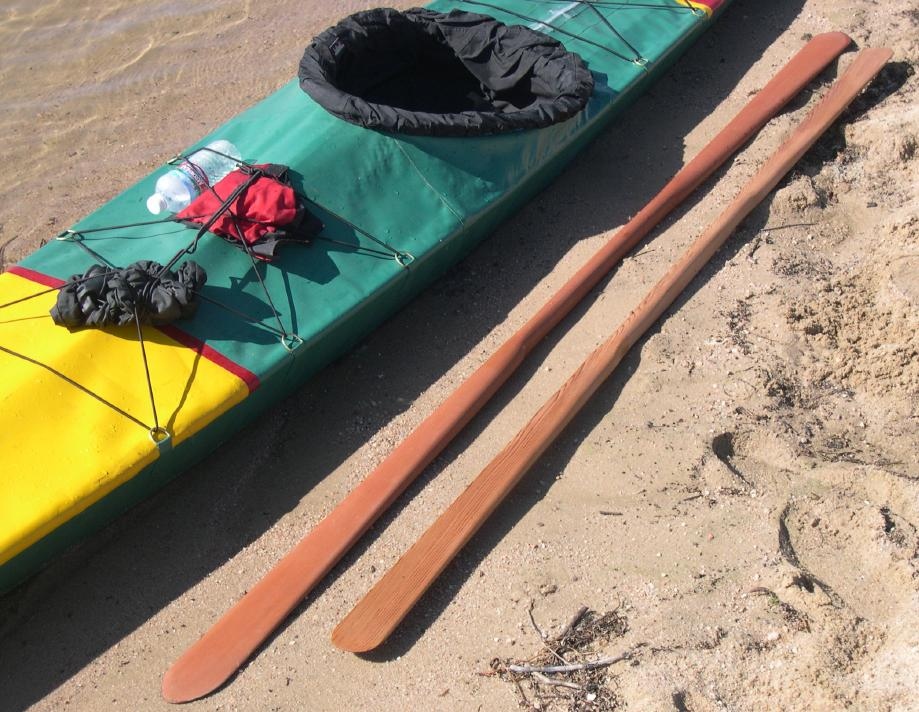

| Greenland Paddle Construction | Menu Previous Page Next Page |
|
 A Sea Rider folder ( 17.3' X 19"), a modified Aleut paddle, and the new Greenland paddle enjoy a beautiful autumn day in Colorado. The AP shown ( 94" X 3.25") is very similar to the one that will be built in the next section on "Take-Apart Paddle Construction". |
|